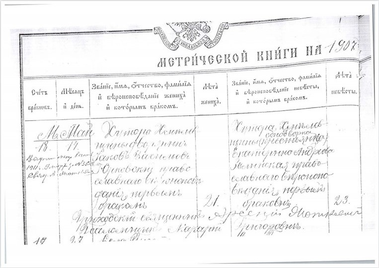
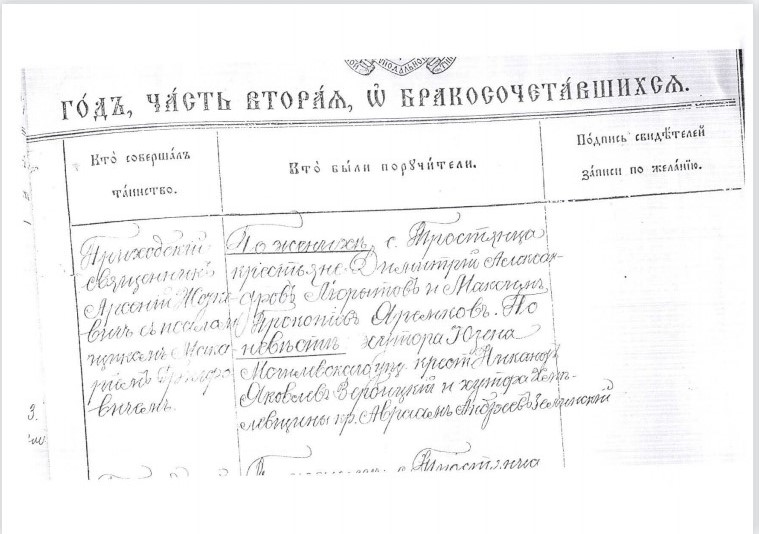
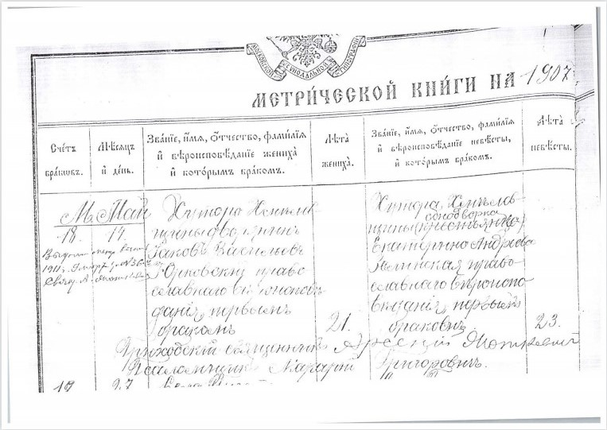
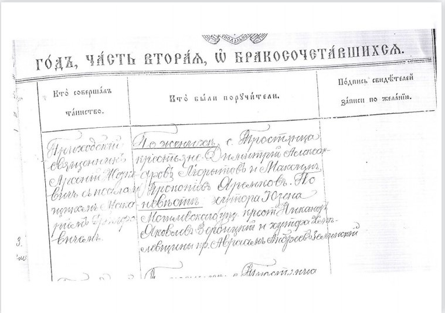

Юрковский Яков Васильевич
1885 - 1938
Родился ст. Бырзлово Херсонской губернии.
Украинец, православный.
Дворянин.
Получил в наследство от своего отца – дворянина, служившего в царской армии в чине полковника, имение и 150 десятин земли на хуторе Хмелёвщина, Ямпольского уезда Подольской губернии (Ямпольский район Винницкой области). Родственники Якова проживали в городе Сороки (Бесарабия) ныне Молдова. В 1907 году женился на Зелинской Екатерине Андреевне 1884 г.р.
Свидетельсто о браке
 



У них родилось 3 детей: Зина, Борис и София
В 1914 году был призван на военную службу в Царскую армию в чине прапорщика и прослужил до 1917 года. В 1918 году имение разгромили крестьяне и по приказу РВК – ликвидировали хозяйство (раскулачили).

В 1918 году был мобилизован в Петлюровскую армию, в которой прослужил до 1919 года. Во времена правления Деникина на Украине он ушел из дома и вернулся в 1925 году. Служил ли у Деникина – неизвестно. С 1925 по 1930 год проживал на хуторе Хмелёвщина.
В 1930 году Яков переправился в Румынию и вернулся в Хмелёвщину в 1935 году. В том же году его арестовали органы НКВД, обвинили в шпионаже в пользу Румынской разведки и выслали на север Советского Союза в город Макушино, Челябинской обл. (Курганская обл.) где он отбывал наказание на выселке и работал учителем в школе, а позже агрономом Моршихинской МТС Макушинского района, где был арестован 4 апреля 1938 повторно. Обвинен в шпионаже по статье 58, п. 6, 11.. и отбывал наказание в Челябинской тюрьме, где и умер 6 октября 1938 года.